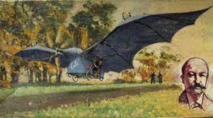

Attention: En fonction des pays, le premier vol de l'histoire peut varier. En France, on considère que le premier avion est l'Eole (français). Dans d'autres pays on considère que ce sont les frères Wright (américains) qui l'ont effectué.
En s'inspirant du vol des oiseaux, notamment celui des chauves-souris, l’ingénieur Clément Ader cherche à vaincre la pesanteur et à faire voler un engin motorisé plus lourd que l’air.
Depuis l’invention en 1783 de l’aérostat, on pense que seul un gaz plus léger que l’air permet à une machine de s’envoler, le poids de l’ensemble étant inférieur à celui de l’air déplacé. Pour s’envoler sans le secours d’un gaz léger, le véhicule, d’un poids supérieur à celui de l’air qu’il déplace, aurait besoin d’une puissance ascensionnelle – une force mécanique – au moins supérieure à la différence des deux poids. C’est en tout cas l’hypothèse de Clément Ader.
Entre 1882 et 1889, il s’emploie à construire ce qu’il nomme un "avion" Le mot vient du latin avis, qui signifie oiseau. Il dérive du mot aviation inventé en 1863 par un journaliste, Gabriel de La Landelle, en référence à la «barque ailée» d'un marin breton ; en fait un planeur tiré par un cheval, face au vent.... Baptisé par lui Éole (le maître et régisseur des Vents, dans la mythologie grecque), ce premier avion est doté, telle une chauve-souris géante, de deux ailes d’une envergure de 14 mètres articulées par une armature en bois recouverte d’une soie élastique. Placé à l’arrière de l’appareil, le pilote manœuvre ces ailes par manivelles et leviers. Quant au moteur du véhicule, il est alimenté par une chaudière à tubes pourvue d’un brûleur à alcool, la vapeur devant alimenter deux couples de cylindres de 20 chevaux qui entraînent une double hélice en bambou, le tout pesant plus de 250 kilogrammes, pilote compris.

Le 19 avril 1890, Clément Ader dépose un brevet relatif à "un appareil ailé pour la navigation aérienne dénommé Avion". Sa première démonstration a lieu le 9 octobre suivant, sur une piste de 200 mètres que le banquier Gustave Pereire a fait aménager pour lui dans le parc de son château d’Armainvilliers, en Seine-et-Marne. Ader met le moteur de l’avion en route et très vite, les soubresauts de ses roues cessent, Éole s’élève de 20 cm au-dessus du sol sur une distance de 50 mètres. Le décollage du "plus lourd que l’air" est ainsi réalisé pour la première fois au monde.
Note: c'est ce point qui est contesté dans le monde, la distance et la faible hauteur du vol font que ce vol n'est pas consideré comme le premier